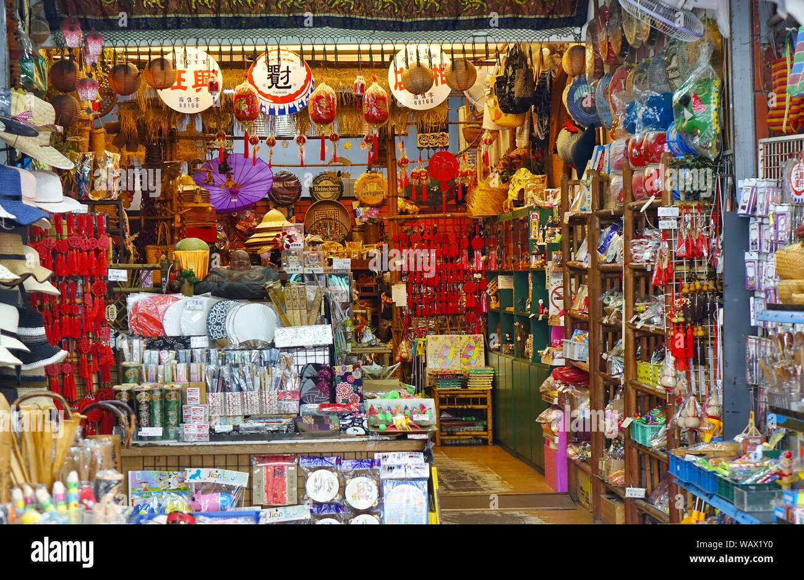
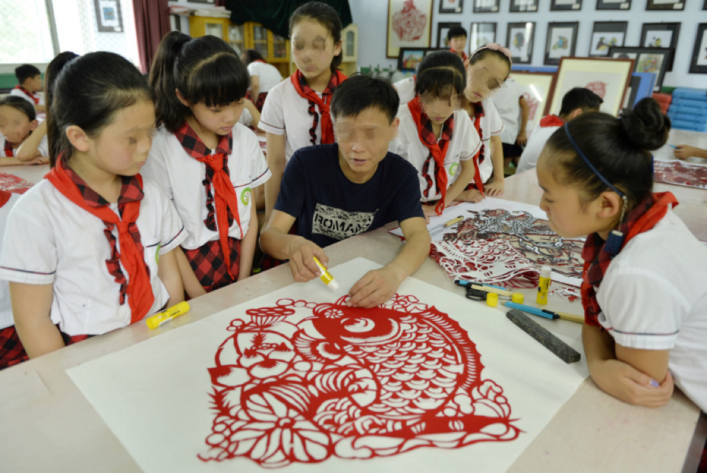

Preserve Chinese Folk Art
Today, younger generations prioritize learning new technologies, often overlooking traditional craft skills. This shift leaves many craftsmen concerned about the potential extinction of their crafts.
Market

The market for Chinese arts and crafts has been growing. Some individuals propose that for the market to further expand, Chinese artisans should alter their methods and encourage young people to explore their creativity, in addition to learning the craft. Artisans can also incorporate contemporary elements to appeal to a wider modern market.

Education
Some traditional arts and crafts skills have been introduced to community workshops, primary, and middle schools. However, expanding the availability of these classes or integrating them into high school as elective courses would greatly enhance their impact and reach.
Exhibition
Exhibitions serve as a vital means for the preservation and promotion of cultural heritage. Many famous museums, such as the Palace Museum in Beijing, the British Museum in London, as well as the Metropolitan Museum of Art in New York, have exhibited traditional Chinese arts and crafts.